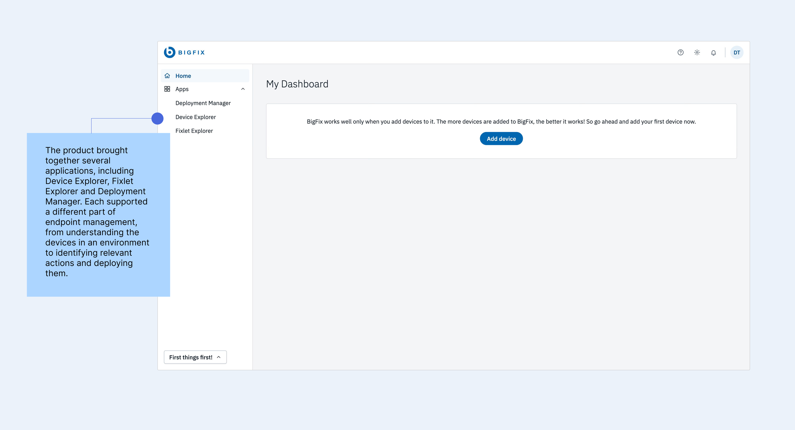

Designing for faster activation, time to first value and faster adoption of HCL BigFix's new SaaS venture.
BigFix SaaS was a new cloud-delivered product built on HCL BigFix's established endpoint management capabilities. While the product gave administrators a clear way to add their first device, understanding what to do next required navigating several applications and technical workflows.
Designing the first guided onboarding experience for BigFix SaaS, while helping shape a scalable onboarding strategy for the product.
The business context
BigFix helps enterprise IT teams manage and secure endpoint environments. With BigFix SaaS, these capabilities were being delivered through a cloud-based experience, making it easier for organisations to get started.

Although the individual applications were designed to be usable on their own, new administrators still needed to understand how these capabilities worked together.
For someone already familiar with BigFix, the relationship between the applications might be clear. For someone encountering the product for the first time, figuring out where to begin and what to do next could require considerable effort.
The challenge
A clear first action, but an unclear path to value
The dashboard already gave new administrators a prominent option to add their first device. However, once they completed that action, the next steps were less obvious.
Users needed to discover how to find a relevant Fixlet, deploy it to a device, monitor the deployment and understand which application supported each part of the workflow.
This raised an interesting question.
If the product was already designed to be intuitive, what additional value could onboarding provide?
The research highlighted a gap between understanding how to operate an interface and knowing which actions would help users achieve their goals.
Users were often overwhelmed by feature-heavy introductions, while existing help resources lacked clear entry points. Information was available, but users needed more direction on what mattered during their first session.
I wanted the onboarding experience to help users focus on the first few meaningful actions that would bring them value from the product.
Outcomes
The project established the first structured onboarding model for BigFix SaaS and helped shape how the team approached onboarding as a product capability.
Reusable guidance patterns
The checklist and contextual hotspot interactions established a consistent foundation for product guidance that could extend to additional workflows, roles and applications.
A phased onboarding strategy
The team's build-versus-buy evaluation resulted in a dual strategy, combining a lightweight, internally built onboarding experience for the initial release with a longer-term direction towards a third-party platform as onboarding needs expanded.
A foundation for measuring activation
Milestone completion, time to first device, time to first deployment, drop-off between tasks and feature adoption after onboarding were defined as the key signals.
My contribution was helping surface and evaluate the trade-offs around scalability, maintenance, engineering effort and long-term ownership through research and design exploration. Since this was a zero-to-one initiative, I also considered how onboarding effectiveness could be measured as the product developed. Support requests, repeated setup attempts and qualitative feedback could help identify where users needed more guidance or were encountering technical difficulties. Together, these measures would help the team understand how effectively onboarding supported activation and where the experience needed further improvement.
Understanding what users needed from onboarding
One of the important considerations was that BigFix SaaS would serve administrators with different levels of experience and responsibilities.
Some users would be completely new to BigFix and need guidance through the core workflows. Others might already understand endpoint management and simply need help locating familiar capabilities in the new SaaS interface.
A feature-by-feature walkthrough would introduce the interface, but the research suggested that users would benefit more from guidance connected to their responsibilities.
This led me to explore task-based onboarding, where users could learn the product while completing meaningful actions.
I also considered how this approach could support different user roles over time. Each role could have its own relevant milestones, while sharing a consistent interaction pattern across the product.
For the initial experience, I focused on the journey of a new administrator getting started with BigFix SaaS.
Defining what first value should look like
Before designing the onboarding interface, I needed to understand what a new administrator should accomplish during their first session.
Adding a device was an important starting point, but the product's value became clearer when users could take an action on that device and see the result.
I defined the initial activation goal around three connected actions.
Add a device → Deploy a Fixlet → Confirm that the deployment worked
This gave me a practical outcome to design towards and helped identify which capabilities users needed to discover first.
I translated the activation journey into five milestones.
Add a device
Connect the first endpoint to BigFix SaaS.
Deploy a Fixlet
Take an action on a relevant device.
View the deployment
Understand where to monitor the result.
Explore Fixlet Explorer
Become familiar with finding and reviewing Fixlets.
Explore Device Explorer
Understand where to inspect managed devices.
The first three milestones focused on completing a meaningful task, while the remaining two helped users become more familiar with the applications they would continue using.
Defining these milestones helped me focus the onboarding experience on what users needed to accomplish, while keeping the initial learning curve manageable.
Mapping the journey across applications
With the activation milestones defined, I started mapping how users would move through BigFix SaaS.
The journey involved several applications. Users would begin on the dashboard, complete the device setup process, move to Fixlet Explorer to select an action and then use Deployment Manager to review its progress.
The application switcher, help resources and system feedback also played a role in supporting these transitions.
Mapping the workflow helped me identify where guidance would be most useful, which actions needed additional explanation and how progress could remain visible as users moved between applications.
It also highlighted a larger consideration. The onboarding experience would need to work across multiple applications, accommodate different levels of expertise and evolve as the product introduced new capabilities.
This brought another question into the design process.
How could the team build an onboarding experience that supported the initial SaaS release and remained sustainable as the product grew?
Thinking beyond the onboarding interface
Exploring the build-versus-buy trade-off
As I worked through the onboarding journey, it became clear that the interaction design was only one part of the challenge.
A guided onboarding experience would require ongoing updates as product workflows changed. New applications, features and user roles could introduce additional milestones, while even smaller interface changes might require existing guidance to be updated.
This made long-term ownership and maintenance important considerations.
I started researching how other SaaS products approached onboarding and explored the trade-offs between building a custom experience and using a third-party onboarding platform.
The research helped me frame a few questions that were important for the team to consider.
- How frequently would onboarding need to change as the product evolved?
- How much engineering effort would be required to build and maintain custom guidance?
- Could the same experience support different applications, user roles and future capabilities?
- At what point would a dedicated onboarding platform become more sustainable?
Building the experience internally would give the team greater control over the initial implementation and allow the guidance to stay closely connected to the product's workflows.
A third-party solution could provide more flexibility for managing onboarding content and supporting additional journeys as the product matured, although it would introduce its own costs and integration considerations.
I used these findings to bring longer-term scalability and ownership into the discussion alongside the immediate user experience.
The team adopted a dual strategy
After evaluating the trade-offs, the team adopted a phased approach.
- For the initial SaaS release, the team would build a lightweight, purpose-built onboarding experience. This would support the immediate activation journey while keeping the implementation focused on the tasks users needed to complete first.
- As the product grew, the longer-term direction was to move towards a third-party onboarding solution. This would allow the team to revisit the tooling decision once onboarding needs became clearer across additional features, roles and customer segments.
This approach gave the team a way to balance the immediate release needs with future scalability. It also meant that the initial onboarding work could help establish which guidance patterns, behaviours and capabilities a future solution would need to support.
For me, this was an important part of the project. The research helped me contribute to conversations about engineering effort, roadmap priorities and long-term product ownership, while keeping the needs of new users central to the discussion. The design challenge was now clearer. I needed to create a useful onboarding experience for the initial release, with patterns that could also inform how onboarding evolved in the future.
Introducing First Things First
With the activation journey and implementation direction established, I explored a checklist-based approach that could make the first few tasks visible from the beginning.
I called it First Things First, reflecting the idea of helping administrators focus on the most useful actions during their initial experience.
The checklist introduced all five milestones and showed which tasks had been completed, which one was currently active and what remained.
It stayed accessible as users moved between applications, allowing them to return to the onboarding journey without losing track of their progress.
I designed the checklist around different stages of completion, from the initial introduction through partially completed tasks to the final completed state.
I also included direct access to relevant help resources and an option to skip the guided experience. This allowed new administrators to follow a structured journey while giving experienced users the flexibility to explore independently.
The checklist provided the overall structure. The next challenge was deciding how much guidance users needed within each milestone.
Designing guidance around real product tasks
Helping users add their first device
Most BigFix capabilities depended on having at least one managed device, so I kept adding a device as the first milestone.
The dashboard presented Add Device as the primary action, taking users into a setup flow where they could select the appropriate installer and follow the instructions required to connect their endpoint.
Because the installation involved technical steps, I provided access to a video and user guide for users who needed additional support. I wanted the primary interface to remain focused on the current action, with more detailed instructions available when required.
An important consideration was how the system would communicate completion. Downloading the installer was one step in the process, while the meaningful outcome occurred when the device successfully connected to the organisation.
I designed the success state around that event, confirming that the device was available, updating the checklist and introducing the next milestone.
Connecting the system's success feedback to the onboarding checklist helped users understand what they had accomplished and where to go next.
Introducing applications when they became relevant
After adding their first device, users needed to move into another part of BigFix SaaS to continue.
I used the application switcher to introduce the different applications progressively, connecting each one to the task users were trying to complete.
For example, when a user was ready to deploy their first Fixlet, the guidance introduced Fixlet Explorer and directed them towards the relevant workflow.
This allowed users to build an understanding of the applications through their work. I kept the initial explanations focused on what users needed at that moment, allowing more advanced capabilities to become part of later exploration.
Guiding users through their first Fixlet deployment
Deploying a Fixlet was one of the most important milestones because it introduced a core BigFix workflow.
I designed the guidance to take users through opening Fixlet Explorer, selecting a relevant Fixlet, reviewing the devices it applied to and initiating a deployment.
Within Fixlet Explorer, contextual instructions introduced the table, relevant-device counts, filters and Fixlet details. These views contained considerable technical information, so I focused the guidance on the controls required to complete the first deployment.
For example, using filters involved several interactions, from opening the filter panel and selecting a category to choosing a value and applying the selection. I broke these interactions into manageable steps, with each instruction appearing beside the relevant control.
The same approach carried into the Fixlet details view, where users could inspect the information required before taking action.
I wanted users to become familiar with the interface through the actions they were already trying to complete, with each step giving them enough context to move forward confidently.
Helping users understand the result
Once users initiated a deployment, they needed to understand where to see what happened.
I connected this milestone to Deployment Manager, introducing the deployment list, status indicators, deployment details and information about relevant devices. This helped users understand how to monitor the deployment and recognise its success or failure.
It also completed the initial activation goal I had defined earlier. Users could now connect adding a device, taking an action and monitoring the result into one meaningful workflow.
The success feedback and updated checklist made that progress visible, helping users continue towards the remaining exploration milestones.
Creating a reusable guidance pattern
As I worked through the individual milestones, I noticed that similar guidance interactions were needed across several applications.
A navigation menu, a table filter and a deployment status required different explanations, but they could share the same interaction structure.
I designed a reusable hotspot component that could be anchored to an element in the interface. Each hotspot included a short instruction, navigation controls for moving between steps and a final Got It action. Where more detailed explanation was needed, users could access supporting documentation.
This gave me a consistent way to guide users through different interactions without introducing a separate component for every screen.
I also considered how easily these patterns could be extended to future onboarding tasks. Since the team had chosen a lightweight initial implementation, keeping the interaction model consistent helped define a focused set of behaviours for the first release.
The reusable patterns created consistency for users while providing a clearer foundation for future onboarding journeys and tooling decisions.
Making the experience flexible for different users
One consideration throughout the project was that BigFix SaaS would serve administrators with different levels of familiarity.
Some would benefit from following the complete journey, while experienced administrators might already understand the underlying workflows and only need help navigating the new interface. I wanted the experience to support both.
New users could follow the checklist from beginning to end, while experienced users could open individual milestones, dismiss instructions or skip the tour.
This influenced how I structured each milestone. The guidance needed to make sense independently, allowing users to access help for a particular task without having to repeat earlier steps.
The decision balanced the need for direction with the flexibility expected by experienced enterprise users.
Iterating on the experience
With the overall journey established, I moved into wireframes and prototypes to explore the interaction details.
I focused on whether the milestone sequence was clear, how the checklist would behave across applications, how much information users needed at each step and whether hotspots would interfere with the interface.
One of the areas I refined was the amount of instruction presented at once. Longer explanations increased the reading required before users could take action, so I shortened the guidance to focus on the immediate task and moved deeper explanations into contextual help resources.
I also adjusted hotspot placement to keep instructions close to the relevant controls and avoid obscuring important content.
Another consideration was continuity. Since users would move between several applications during onboarding, I wanted their progress to remain visible throughout the experience. Keeping the checklist accessible and showing completed milestones helped reinforce that continuity.
These iterations gradually shaped an experience that gave users enough direction to move forward while keeping their attention on the actual product task.
The final experience
The resulting onboarding model connected five activation milestones through a persistent checklist and contextual guidance across BigFix SaaS.
New administrators could begin with a clear action on the dashboard, follow the First Things First journey and receive relevant instructions as they moved between applications.
Each milestone connected to a real product task, with feedback that helped users understand when they had successfully completed it.
Experienced users could choose how much guidance to follow, while supporting resources remained available when additional explanation was required.
The interaction patterns were also designed to be reusable, giving the initial onboarding experience a consistent structure that could support additional journeys as the product evolved.
My takeaways
Starting with the user's goal makes onboarding more purposeful
Starting with the activation outcome helped me identify which capabilities mattered during the first session, how the milestones should connect and where additional support would be useful.
Thinking about scalability changes the design conversation
Exploring build versus buy pushed me to consider how the experience would be implemented, maintained and extended over time.
Small guidance decisions can shape the larger product experience
Designing onboarding across multiple applications made me more aware of how much users depend on continuity, feedback and clear next actions.